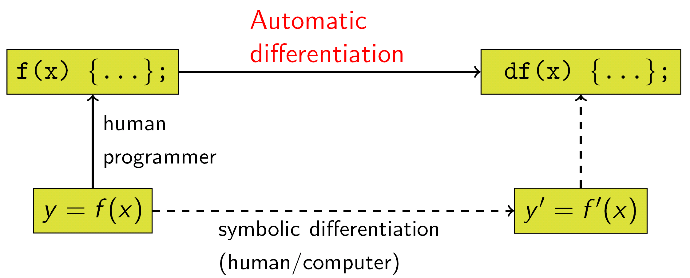

Open science approaches to the mathematical modeling of infectious disease
Simon Frost
Principal Data Scientist, Microsoft &
Professor of Pathogen Dynamics, LSHTM


 sdwfrost@microsoft.com
sdwfrost@microsoft.com
 @sdwfrost
@sdwfrost  http://github.com/sdwfrost
http://github.com/sdwfrost
Introduction
- Three parts:
- Models: making models easier to understand and modify
- Code: making models easier to run
- Platforms: empowering models with compute and data
- An open science approach can help with all the above
Modeling applications
- We want to be able to use our Premonition platform to feed sensor data into models
- We’d also like to learn from models e.g. for decision support
- We’re also a small team, and can’t make models all the time
- We need to use ‘third party’ models for our projects
- West Nile Virus in Harris County, Texas
- Malaria in Tanzania
- Lymphatic filariasis in Nepal
- River blindness in Nigeria
- Lassa fever in Nigeria
- Complex, climate-sensitive models
Issues with using models
- They may not consider the compartments you need or the data you have
- They may be difficult to understand
- The written description may be incomplete
- The code, if available, may be difficult to install
- Each model takes different inputs and outputs
FAIR principles of open science
- Findable, Accessible, Interoperable, Reproducible
- Models often do not adhere to FAIR principles
- I’ll discuss how we might go about changing this
- Associated scientific benefits beyond openness
Formulating models
- The way we formulate models can make it easier for others to build upon
- A compatible modeling approach
- The ability to comprehend the model
- The ability to extend the model
- The states considered in the model
- The method used for inference
Processes, not states
- Our primary focus in compartmental models is the compartments rather than the transitions
- By modeling the transitions, we can easily shift between ODEs, SDEs,
and jump processes
- Reaction networks in chemistry
- Petri nets
Stochastic petri net
\[ \begin{array}{lllll} \rm{Transition} & \Delta I & \rm{Rate} \cr \hline S + I \rightarrow I+I & +1 & \lambda I \cr I \rightarrow R & -1 & \mu I \cr \end{array} \]

- Transitions: orange squares
- States: blue circles
ODEs and jump processes
- With the model formulated as transitions, we can easily convert into ODEs, SDEs, and jump processes
- Example can be found here
ODE

Jump process
Moment closure
- Another benefit is to automate moment closure
- Code is here
Finite state projection of the master equation
- Code is here
Retrofitting models with phylodynamics
- To be able to incorporate phylogenetics into our models, we need to:
- Take a process based approach
- Divide processes into:
- Birth
- Death
- Migration
- Sampling
Expanding the state space
- Can make non-Markovian models easier to simulate
- Can more closely link models with observables
- We don’t directly observe the contact network or the transmission network
State expansion in phylodynamic models
- Number of lineages over time
- Clustering statistics
- Tree shape statistics
- Parsimonious counts of migrations in structured models
Counting infections
- Counting reinfections in SIS models
- Can account for high reinfection vs. first infection in gonorrhoea
- Counting infectees to capture ‘superspreaders’
\[ \begin{align} \frac{dS}{dt} & = -\beta S \Sigma_i I_i\cr \frac{dI_1}{dt} & = \beta S \Sigma_i I_i - \gamma I_1 - \beta S I_1\cr \frac{dI_i}{dt} & = \beta S I_{i-1} - \gamma I_i - \beta S I_i\cr \frac{dI_N}{dt} & = \beta S I_{N-1} - \gamma I_N\cr \end{align} \]
Degree distribution is geometric
- Half of individuals at any one time have not (yet) infected anyone
Dealing with increased complexity
- An argument against increasing the state space is the increased
complexity of the models
- Easier to make mistakes, which may go unnoticed by someone using the model
- Harder to understand, and hence to re-use
- Possible remedies
- Use domain specific languages (DSLs)
- Exploit composability
Using DSLs
- R
odin
Linear chain trick
- Code is here
An age-structured PDE
Composability
- Another way to make complex models easier to understand is to compose them from smaller submodels
- Causal approaches: Outputs from one model are linked to inputs of
another
- Volz coalescent models
- Mick Roberts’ ODE/map
- Acausal: Inputs and outputs can be linked between models
birectionally
- Identify shared states between submodels
An algebraic petri net
becomes
- Code is here
Using frameworks with automatic differentiation
- Forward AD: Replace numbers \(x\) with dual numbers \(x + x' \epsilon\)

Simulated SIR model


Local sensitivity
- AD allows us to examine the sensitivity of trajectories to changes in parameters (code here)

HMC/No U-Turn Sampler
- We can also use efficient MCMC samplers such as NUTS if we have gradients via AD (code here)
Neural networks
- Model neural network platforms rely on automatic differentiation
- Neural networks have found their way into the differential equation
space and vice versa
- Using differential equations to create infinitely-deep neural networks
- Learn the differential operator
- To build semiparametric models
- ‘Learn’ the force of infection without making e.g. mass action assumptions
Learning the force of infection
- Replace \(\lambda(t) = \beta I(t)\)
with \(\lambda(t) = f(I(t))\) where
fis a neural network. - Multiple advantages with replacing state-dependent terms rather than time-dependent terms (code here)

Using other peoples models
- In many cases, models may be too much work to re-implement
- We can still compose models using a causal approach
- At the very least, we should be able to reproduce the results of a model if we have the code
- To make models useful, we need to be able to run the models e.g. with different parameter sets
Making models reproducible
- Papers often omit details of the model, but even if they include all the equations, there can be problems
\[ \begin{align*} \dfrac{\mathrm dS}{\mathrm dt} &= -\frac{\beta c S I}{N}, \\ \dfrac{\mathrm dI}{\mathrm dt} &= \frac{\beta c S I}{N} - \gamma I,\\ \dfrac{\mathrm dR}{\mathrm dt} &= \gamma I, \\ S(t) + I(t) + R(t) &= N \\ S(0) = 990, I(0) = 10, R(0) &= 0 \\ \beta=0.05, c=10, \gamma &= 0.25 \end{align*} \]
Why is this not enough for numerical work?
- What numerical precision was used?
- Which solver was used?
- These problems are even more acute with more complex models
- PDEs: which numerical scheme?
- Agent based models
The importance of preservation

The importance of versioning

Packaging the models in ‘containers’
- A container is like a lightweight ‘virtual machine’
- You can bundle all the code and dependencies (and even data) that a
model needs to run
- Portable(ish)
- Reproducible
- Versioned
- Makes it easier to run models remotely
- ‘Full’ packaging can be difficult when commercial packages (Matlab, Mathematica, Maple, etc.) are used
An example Dockerfile
FROM python:3
ARG COVASIM_VER=1.0.0
RUN pip install covasim==${COVASIM_VER} pandas
COPY . /app
CMD ["python", "/app/runsim.py", "/data/input/inputFile.json", "/data/output/data.json"]Running the models
- JSON (Javascript Object Notation) is an open standard file format, and data interchange format, that uses human-readable text
- Schema can be used to validate
- Goal: Models can be run as:
my_model input.json output.json
An example input
- An array of parameter values, p, an array of initial conditions, u0, and a timespan over which to simulate
{
"p" : [0.05,10.0,0.25],
"u0" : [990.0,10.0,0.0],
"tspan" : [0.0,40.0]
}A better input
{
"p" : {"b": 0.05, "c": 10.0, "g": 0.25},
"u0" : {"S": 990.0, "I": 10.0, "R": 0.0},
"tspan" : {"tmin", 0.0, "tmax": 40.0, "dt": 0.1}
}Making application programming interfaces (APIs) to models
- Use default parameters (can use multiple endpoints for different
scenarios):
"/run_default"
- Using a path:
"/run_path/{b}/{g}/{S0}/{I0}/{R0}/{t0}/{tmax}/{dt}"
- Using JSON formatted data
- Modern tools allow you to add interfaces to your models with as little as 1-2 extra lines of code
Webpage input
- Model runner examples are here
How do these open science approaches make models more useful?
- Models are often developed in isolation
- from the data
- from those who may use the models e.g. in decision making
- Approach
- Provide a cloud compute platform to run models
- Provide a data platform to assist epidemiological models
- Work with stakeholders to build useful dashboards
Model runner background
- Engineers at GitHub and Microsoft helped to open-source the code for Neil Ferguson’s covidsim
- Involved code review by John Cormack (founder Id Software, former CTO of Oculus)
- Refactored the code, containerized it, allowing it to be run in the cloud (Microsoft Azure)
- In parallel, engineers at GitHub developed a model runner and a
front-end to run multiple COVID models
- covidsim, covasim (IDM), covid19-scenarios (Richard Neher), MC19 (Stripe/Harvard)
Imperial’s Covidsim
Model runner architecture
Front end

Issues
- Models didn’t have an existing web API, so connectors had to be built
- Models may have little overlap in inputs and/or outputs
- Development shifted to just making a web API to schedule and retrieve model runs
The Sentinel Project
- Project that brings together modellers in the UK with the Nigerian CDC and ACEGID
- Can we support decisions on Lassa fever surveillance through automated running of models on epidemiological data?
- What is the value of viral sequence information?
- How can we streamline data collection so that it is more accurate and complete?
Lassa fever in Nigeria
Forecasting Lassa fever in Nigeria
- We’ve packaged the statistical model from Redding et al. (2021)
- Spatiotemporal model implemented using R-INLA
- Outcome: number of cases offset by population size
- Predictors:
- RW1 on year
- Cyclic RW2 on week
- RW2 on SPI (lagged by 120d)
- RW2 on precipitation (lagged by 60d)
- Spatial autocorrelation
Forecasts
Musa et al. (2020) Lassa fever model

Fitted force of infections

Next steps
- What information is useful to the Nigerian CDC?
- How can sensitivity analysis be done interactively?
- How can we extend to other diseases?
The Computing the Biome project
- Public-private partnership funded by the NSF to study how real-time
vector surveillance using Microsoft Premonition devices can empower
vector control of West Nile virus in Harris County, Texas
- Integrate existing data with public datasets
- Generate sequence data from mosquito samples
- Add real time mosquito data and weather data
- Build models
- Feed results back to interested parties
Where to put our devices?
- Treating our traps as a limited resource, where should we place our devices?
- Developing adaptive sampling protocols in order to guide the logistics of moving traps around
- Very outcome-dependent
- For Harris County, we have historical data going back to 2006 on
weekly trapping counts and West Nile Virus results on pooled mosquitoes
- Provide short term forecasts using data-driven models
- Long term scenarios/projections using mechanistic models
Spatial patterns in Harris County
An exemplar data ecosystem
- As part of the Computing the Biome project, we will provide a
snapshot of our data lake
- Mosquito and vector control data (from Harris County Public Health)
- High-resolution climate data (from Tomorrow.io)
- Data from our biological weather stations (from MSFT)
- Integrated with other public datasets
- Human population data
- Social vulnerability data
- Land use data
- LIDAR data
Models
- We’re working with David Smith and Sean Wu (UW IHME) to integrate their models into our architecture
- MicroMoB
- Discrete time, deterministic or stochastic model for mosquito density and vector-borne disease
- exDE
- Continuous time, differential equation based framework for mosquito density and vector-borne disease
- MBITES
- Individual-based model for patterns of daily activity
exDE framework

Linking vector control and weather to mosquito models

Finding models
- I’ve spoken about Accessibility, Interoperability, and
Reproducibility
- What about Findability?
- Implementations that are hard to find
- Age of infection models
- Age structured models
- Size structured models
Epirecipes
- Started when I was a Turing Fellow at The Alan Turing Institute
- Aims:
- Code as many models and techniques in as many computer languages as possible
- Provide a zero-install way to try out these models
- Current development
- Illustrate as many techniques applied to a simple SIR type system
- Coded primarily in Julia
Demos include…
- Different frameworks:
- ODEs, DDEs, SDEs, jump processes, maps, Markov models, agent based models, discrete event simulations
- Inference (mostly for ODEs)
- MCMC, nested sampling, ML through optimization, ABC
- Composition
- Surrogate models
- Uncertainty quantification
- Miscellaneous
- Adomian polynomials, fractional differential equations
Things that help promote model re-use
- Think about modeling in terms of processes rather than states
- Simplify the model description using domain specific languages
- Make the model composable so the model building process is evident
- Provide parameter ranges and default scenarios
- Package the model with self-documenting inputs and outputs
Conclusions
- I’ve tried to promote an open science approach to numerical methods in epidemiological modeling
- Potential benefits
- Citations! Fame!
- Others can verify and build on your work
- Development of data and compute platforms that may help your models
- Modern computational tools lessen the burden of adopting these practices
- Let me know if you want a reference implementation of your approach
Links
- Microsoft Premonition
- Epirecipes
- APIs/COVID Model Runner
- Mosquito modeling
- exDE: https://github.com/dd-harp/exde
- MicroMoB: https://github.com/dd-harp/MicroMoB
- MBITES: https://github.com/dd-harp/MBITES